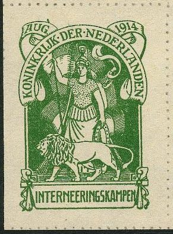
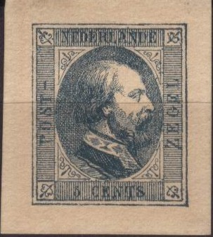
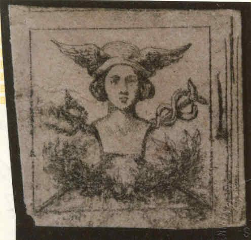

Return To Catalogue - Netherlands
Note: on my website many of the
pictures can not be seen! They are of course present in the
catalogue;
contact me if you want to purchase it.
These stamps were printed (and exist normally perforated), but during the German occupation they were stolen from the printer (imperforate), they showed up several years later in large quantities. The values 5 c green, 10 c violet, 12 1/2 c blue and 15 c blue exist in this imperforate state.


1 c lilac and black 3 c lilac and black 5 c lilac and black 5 c lilac and black 12 1/2 c lilac and black 15 c lilac and black 20 c lilac and black 25 c lilac and black 30 c lilac and black 50 c lilac and black 60 c lilac and black 1 G lilac and red 2 G lilac and red
The hole in the stamp is supposed to make the stamp invalid. It was the usual cancellation applied together with a pen strokel. The telegraph stamps were used up to end 1920.
A very rare error with inverted center of the 1 c value, once belonging to the famous collector Ferrari, has turned out to be a forgery, see: https://findyourstampsvalue.com/rarest-stamps/most-valuable-dutch-stamps.

On stamps with value in ellipse 1 c red 1 1/2 c blue (overprint black or red) 2 c brown 2 1/2 c green On stamps with Queen Wilhelmina 3 c green 5 c red 10 c grey
Value of the stamps |
|||
vc = very common c = common * = not so common ** = uncommon |
*** = very uncommon R = rare RR = very rare RRR = extremely rare |
||
| Value | Unused | Used | Remarks |
| 1 c | * | * | |
| 1 1/2 c | * | * | Red overprint: RR |
| 2 c | ** | ** | |
| 2 1/2 c | *** | *** | |
| 3 c | * | * | |
| 5 c | *** | ** | |
| 10 c | R | R | |
These stamps were issued from 1st February 1913 to 31 October 1919 to be used on letters of 'poverty commities'. Some commities in certain towns used the stamps up to 1921.
Forged overprints exist, it seems that the great majority of these stamps is forged. Examples of forgeries:
"ARMENWET" clumsily done and placed in wrong position.

Another forged overprint
See also http://people.zeelandnet.nl/acoomens/armenwet.htm or http://www.onderdeloupe.nl/brievenbus/artikelen/armenwet.html (both in Dutch) for more information.
Some distinguishing characteristics of the
genuine overprints can be found on this site.
*) These stamps were only used in the towns of Alkmaar,
Amsterdam, Apeldoorn, Arnhem, Breda, Delft c.a., Den Helder,
Deventer, Dordrecht, Enschede, Gouda, ’s-Gravenhage,
Groningen, Haarlem, Heerlen c.a., ’s-Hertogenbosch,
Hilversum, Hoogezand c.a., Leeuwarden, Leiden, Maastricht,
Meppel, Middelburg, Nijmegen, Opsterland, Princenhage c.a.,
Roermond, Rotterdam, Schiedam, Smallingerland, Utrecht,
Vlaardingen c.a., Vlissingen and Zaandam (information found on
the above website). The town of Haarlem also sold these stamps to
stamp collectors (some of them send envelopes to themselves, so
the 'Haarlem' cancel is the most common). Sporadically cancels of
other towns exist (but these are rare).
*) The date of the genuine cancels must be between 1913 and 1921.
*) The overprints were always placed in the same location (a
shifted or vertical overprint is a forged one). The correct
location of the overprints can be found in the images of the
above mentioned website (on top for all values and in the center
for the red overprint on the 1 1/2 c).
1906 These stamps were issued in 1906, the remainders were sold to stamp dealers. They all bear the cancellation "AMSTERDAM 31 JAN 07 10-12".
(Reduced size)
1 c red 3 c green 5 c grey-lilac
These stamps are peforated 12 1/2.
Value of the stamps |
|||
vc = very common c = common * = not so common ** = uncommon |
*** = very uncommon R = rare RR = very rare RRR = extremely rare |
||
| Value | Unused | Used | Remarks |
| 1 c | c | c | |
| 3 c | * | * | |
| 5 c | * | * | |
| With remainder cancel (all values) | c | c | |
These are the first charity stamps issued in the Netherlands and were issued to combat tuberculosis. 1 million stamps were issued of each value, and were put on sale from 21 December to 3 January. Only a fraction of these stamps were actually sold (400,000 of the 1 c, 180,000 of the 3 c and 230,000 of the 5 c). The remainders received the cancel "31 JAN 07 10-12" and were given to the Tuberculosis Society (who presumably sold them to stamp dealers?).
1 G olive 1 G 50 c orange 2 G green 3 G blue 4 G lilac 5 G red 10 G grey
These stamps are perforated 12 1/2. They were used from 1884 to 1889.
Value of the stamps |
|||
vc = very common c = common * = not so common ** = uncommon |
*** = very uncommon R = rare RR = very rare RRR = extremely rare |
||
| Value | Unused | Used | Remarks |
| 1 G | R | * | |
| 1 1/2 G | R | * | |
| 2 G | R | * | |
| 3 G | R | * | |
| 4 G | RR | ** | |
| 5 G | RR | * | |
| 10 G | RR | * | |
(Reduced sizes)
I have seen with inscription "NEDERL. STAATSSPOORWEGEN" (1914): 25 c, 35 c, 40 c and 50 c; all orange stamps with black value inscription. The values 5 c, 10 c, 15 c, 20 c, 30 c, 45 c, 65 c, 1 GULDEN, 1 GLD, 1 1/2 GLD, 2 GULDEN, 2 GLD, 2 1/2 GLD and 3 GLD should also exist (all in color orange with black inscription). Apparently all values also exist in red color (some very rare, or even unkown to still exist). I've never even seen a single red stamp myself.
In a similar design but with inscription "HOLL. IJZEREN SPOORW. MIJ" were issued 5 c, 10 c, 15 c, 20 c, 25 c, 30 c, 35 c, 40 c, 45 c, 50 c, 65 c (only in lilac), 1 G, 1 1/2 G, 2 G, 2 1/2 G and 3 G (only in lilac). Most of them in lilac and later (1920) also in green color (except 65 c and 3 G).
Furthermore I have seen stamps with values 50 c, 1 G and 2 1/2 G with inscription "NEDERLANDSCHE SPOORWEGEN" (1921) in the color yellow (value in black). Other values exist (5 c, 10 c, 15 c, 20 c, 25 c, 30 c, 35 c, 40 c, 45 c, 50 c, 60 c, 80 c etc.).
Another set seems to exist with inscription "HOLL. IJZEREN SPOORW. MIJ" (1917).
Inscription 'NS' 15 c blue and red, with image of diesel train,
issued in 1946.
In another design (so-called 'Hondekop') with 'N.S.' in the design were issued: 50 c green and yellow (1964), 25 c black and orange (1965), 5 c red and grey (1966), 35 c blue and grey (1966), 45 c red and yellow (1967), sorry no image available yet.
In 1966 a "TREINBRIEFZEGEL" was issued, with the image of an approaching train: 55 c blue, red and yellow.
Again another stamp was issued in 1970: 45 c blue and yellow (with logo of Dutch Railways in upper right corner).

From 1934 onwards stamps were overprinted with "COUR PERMANENTE DE JUSTICE INTERNATIONALE"
1924 Bird above the sea issue: 1 1/2 c violet 2 1/2 c green On Queen Wilhelmina 1924 issue: 7 1/2 c red 12 1/2 c blue 15 c orange 30 c violet

7 1/2 c red 10 c lilac 12 1/2 c blue 20 c violet 25 c brown
Court view 2 c brown 3 c blue 4 c green 5 c grey 6 c green 7 c red Queen Juliana 6 c lilac 10 c green 12 c red 15 c red 20 c blue 25 c brown 30 c lilac 1 G grey
2 c blue 4 c green
5 c black and orange 10 c black and blue 25 c black and red-brown 50 c black and green 55 c black and red 60 c black and olive-green 65 c black and blue 70 c black and dark blue 75 c black and yellow 80 c black and grey 1 G black and red-brown 1.50 G black and dark blue 5 G black and orange 7 G black and grey
Some stamps exist with precancels, it can be recognised by a small circle with the name of the city surrounded by straight lines, examples, the city of Zutphen, s'Hertogenbosch (with and without date in the center) and Nijmegen:
I've also seen the cancel 'GRONINGEN' (without year) on a 1/2 c stamp.
Information on large circular cancels, that were used around 1900 can be found on http://www.filatop.nl/grootrond/Catalogus%20grootrond.pdf (in Dutch).
Netherlands numeral
cancels with dots
Netherlands small circular cancels
From about 1970 local issues exist, at first they were only issued for stamp collectors, but since the early 1980's they began a real competition with the goverment post. Examples:
Other example: 'Stadspostdienst Beverwijk':
(Reduced size)
I have also seen the values: 12 c brown (number black), 15 c green (number black) and 18 c violet (number black).
A so-called '3 Stuiver' mark; '3 S', arms and posthorn on a letter used in 1706(?):
These cancels were used from about 1667 to 1811 and were used in Amsterdam. They represent the arms of Amsterdam with a posthorn. In the posthorn a 'H', 'R', 'T', 'D' or no letter can be found. In the above letter a 'R' is used, this means the letter came from Rotterdam. The 'H' stands for The Hague, 'T' for Texel and the 'D' for Delft. If no letter is present the letter came from Amsterdam itself. The value was also indicated 2, 3 or 6 stuivers.
Similar cancels exist with WIC (West Indian Company, 6 st(uivers) only, used from 1718 to 1774) or 'VOC' (East Indies Company, 6 st(uivers), 1 2 or 3 g =guilders, used from 1789 to 1805).
Literature: The First Postage Dues: Holland’s ‘3S’ Markings 1667 – 1811 by Kees Adema, 255 p (I haven't read this book).
During World War I, foreigners (Belgian refugees and soldiers) in the internment camp of Harderwijk and Zeist (?) in the Netherlands could use special large stamps to write letters back home. The use of these stamps was stopped after a short period, since the Germans suspected that messages could be hidden on the backside of these large stamps. Two stamps in a different design were isssued, the inscription reads "INTERNEERINGSKAMPEN". Around 65,000 of each stamp were issued (source: http://www.filavaria.nl/internering.htm).

Refused letter with internment camp stamp, with the text
'unzulassig zuruck' applied by the German censors. Only a few
letters were not refused and arrived at their destination. Only
the green stamps can exist in used condition. According to the
regulations, the camp cancel (violet) is applied, the signature
of the camp-commander and a postal cancel (here Harderwijk). The
brown stamps were issued but never used.
These stamps are rare and forgeries exist, examples:

Forgeries, in the green stamp, there is a break in the frameline
below the "RI" of "KONINKRIJK" and can thus
easily be recognized. The arrow of the spear (above the
"G" of "AUG") is too short.
Another forgery exists with the lines below the label in 1914 not parallel and with a break in the upper frameline above the "DER NE..". Some of these forgeries also have an extra dot between "DER" and "NEDERLANDEN". The arrow of the spear (above the "G" of "AUG") is too short. Some more modern forgeries have 'Facsimile' printed at the back:


In this brown and yellow forgery, the area below the baracks is
white (it should be yellow). The point of the spear (above the
first "N" of "KONINKRIJK") is barely visible
in this forgery. This forgery exists printed on both brownish and
white paper. A sub-type of this forgery exists with a broken
first "E" in "INTERNEERINGSKAMPEN" (see image
above). Also the above forgery is imperforate.....

In this forgery the spear is clearly printed, but it has a white
dot just to the left of it (always visible); also outer frameline
is broken just to the right bottom side of the last "N"
of "INTERNEERINGSKAMPEN". The ornament besides '1914'
is broken. The pole of the lantern is of solid color just below
the top of the roof of the barack. No genuinely used brown stamps
exist (the above forgery is cancelled....).
Forged cancels are abundant on this issue.
See also: http://www.ssew.nl/vervalsingen-herkennen-hw-der-vlist or http://www.filavaria.nl/internering.htm.
Inscription "DRIJVENDE BRANDKAST", these stamps were intended to be used on overseas letters placed in safes. When the ship was sunk, the floating safe would still survive. I do not think these stamps were actually used for this purpose.
(Reduced sizes)
The following values exist: 15 c green, 60 c red, 75 c brown, 1.50 G blue, 2.25 G brown, 4 1/2 G black and 7 1/2 G red. They were issued in 1921 (value *** to RR).
Many stamps with inscription 'Voor het kind' exist. They were issued for a child welfare fund (kinderzegels).

Examples
10 c red 1921 airmail stamp.
10 c red 15 c green 60 c blue
40 c red (Koppen in aeroplane) 75 c green (Van der Hoop in aeroplane)
These stamps were issued on 20 August 1928 and supposed to be used on airmail to Netherlands Indies.
1 1/2 G black 4 1/2 G red 7 1/2 G green
These stamps were issued on 16 July 1929 and supposed to be used on airmail to Netherlands Indies.
36 c orange and blue
30 c green
12 1/2 c blue

Oscar Berger-Levrault essay of the second issue, I've also seen
this proof in 10 c red, the value is indicated in
"CENTS" instead of "CENT".

Oscar Berger-Levrault essay of the second issue, different
design. The value is again indicated in "CENTS" instead
of "CENT".
The above proofs were made by Berger-Levrault. Four different colors (grey-brown, orange, blue and black) were made of each value (5 c and 10 c) on different coloured paper (lilac, white, yellow, green and grey). However, the designs were rejected by the Dutch authorities. Levrault later made more 'artworks' in different colors. The 5c and 10 c also exist printed together (even in sheetlets).
Recently (2005), a lot of so-called 'facsimiles' are offered on Internet auctions of many stamps of the Netherlands and Netherlands Indies, examples of such 'fac similes':
Even facsimiles of proofs are offered, reduced sizes

Mercury proof. Image obtained from a Rietdijk catalogue of proofs
of the Netherlands.

Inscription "BESTELLEN OP ZONDAG ALS 'S ZONDAGS TER PLAATSE
EEN BESTELLING IS NEDERLAND", (deliver on Sunday if such a
service is available in town).

This and similar labels did not have postal validity, but were
often pasted on letters anyway to support the fight against
tuberculosis.

Inscription "NEDERLAND RADIOZEGEL", issued 1941. In
this design I have also see a 75 c blue. Every month a new stamp
was supposed to be pasted on a 'radio-card'.

{kind=link}
{kind=link}
{kind=link}
{kind=link}
{kind=link}
{kind=link}
{kind=link}